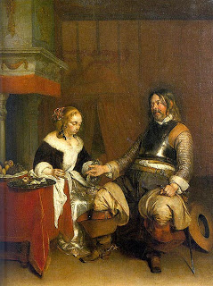

Bava Metzia 43 - Custodian Takes and Uses the Deposit
When one deposits money with a moneychanger, if the money is tied up in a bundle, the moneychanger may not use it. Therefore, if it is lost, he is not liable to compensate the owner. If, however, the money is loose, he may use it. Therefore, if it is lost, he is liable.
When one deposits money with a private householder, the householder may not use it. Therefore, if it is lost, he is not liable. A storekeeper is treated like a moneychanger.
If a custodian misappropriated a deposit and later destroyed it, then according to Beit Hillel, he pays its value at the time and in the state when he used it.
Test your knowledge of the daf